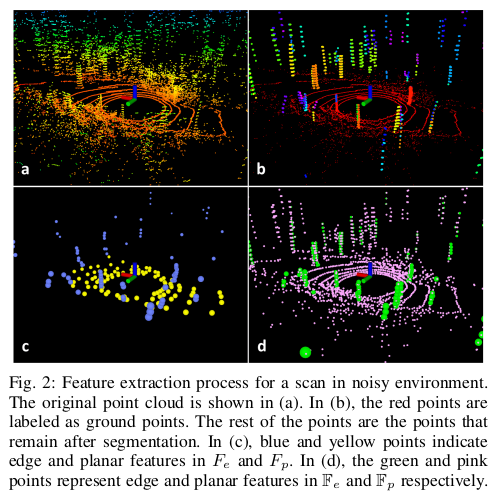

Contents:
2022-01-23
将点云投影到1800*16的图片上。
点云聚类，每个类别少于30个点就去除。
做法同loam，将图片分为6块，然后提取曲率最大与最小的点作为角点或者平面点
提取角点40个，平面点80个，对应图 (d)。其次，再在40，80中选取曲率最大最小的角点2个，平面点4个，对应图 (c)，即两次选取。
Note: 地面点不能成为角点

前后点线，点面匹配，只在同一个cluster中寻找。
两次LM算法，速度有所增加
同loam，在之前的点云中寻找与当前特征点对应的线与面，LM优化位姿
用ICP匹配检测回环，gtsam优化